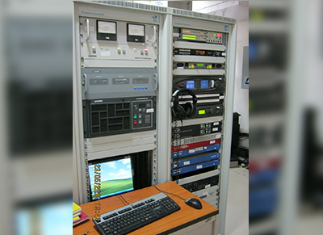

Providing exceptional turnkey technical support, engineering, and manpower for high-fidelity FM Stations.
FM Broadcasting is a method of radio broadcasting using frequency modulation (FM) technology. FM is used worldwide to provide high-fidelity sound over broadcast radio.
FM broadcasting is capable of achieving better sound quality than AM broadcasting, making it the premier choice for music broadcasts. FM radio stations utilize the specific VHF frequencies efficiently to guarantee superior signal quality within a given coverage area.
At Digitcom India Technologies, we specialize in delivering robust end-to-end technical support for FM stations. Our elite engineers ensure that station hardware, transmitters, and antenna systems operate at peak performance, providing seamless audio to millions of listeners daily.
